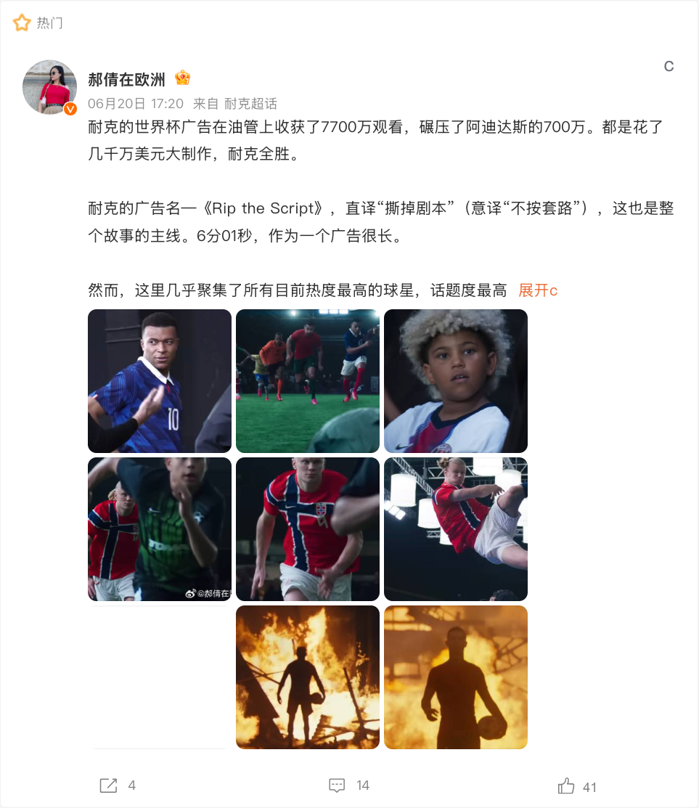
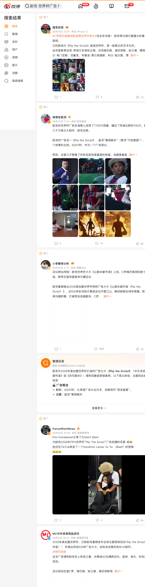
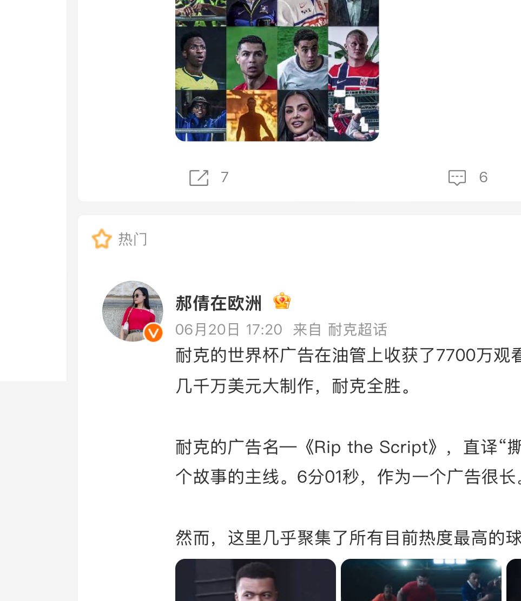

案例发生了什么

Nike 以《Rip the Script》进入足球文化讨论，利用球星与电影级内容建立自己的叙事，而不是与官方赞助商竞争相同的赛事标识。
它解决的策略问题
这页要回答的不是“Nike：《Rip the Script》 是否参与世界杯”，而是它如何通过“球星内容 / 非官方文化参与”回应“用电影级叙事绕开官方身份竞争”这一业务问题。
资源如何变成行动
进入资格
球星内容 / 非官方文化参与
文化切口
用“用电影级叙事绕开官方身份竞争”所对应的生活场景、规则镜头或情绪时刻进入，而非冒充官方。
内容表达
让产品、球星、社区或服务在这个切口中拥有自然角色，减少硬贴赛事的痕迹。
行动出口
准备可分享、可到店、可购买或可兑现的下一步，让讨论不只停在创意本身。
动作拆解
- 用长内容建立文化态度。
- 让球星承担故事角色，而不只是代言人。
- 以社媒切片延长影片的话题周期。
可复用的方法非官方品牌的最佳策略不是伪装官方，而是占领更具体的文化主张。
传播与业务机制
传播机制
用反差、文化观察或稳定场景制造“不靠标识也能被记住”的识别。
参与机制
观众能围观、评论、模仿或在自己的聚会/生活里使用该创意。
业务机制
最适合承接到高频消费、服务使用或零售场景，而非追求空泛的赛事归属。
合规边界
不暗示官方合作，不混用受保护标识，并在文化表达中评估冒犯和误读风险。
适用条件、风险与证据
- 切口必须与产品真实使用场景有关，否则容易变成蹭热度。
- 节奏上要靠近球迷讨论时刻，但不需要强行追每一场赛果。
- 对文化、肖像和赛事知识产权做独立审核。
证据台账可将已核动作作为内部判断基础；涉及投放规模、销售结果或合作细则时，仍应以品牌、平台或权利方的一手发布为准。 当前记录：已归档；素材状态：有图。
补充物料


资料与下一步
不依赖最高级别赛事标识，争夺足球文化和生活场景。 后续补充时，优先归档品牌官方发布页、视频首帧/完整片、线下执行现场、投放时间与可追溯的效果口径。